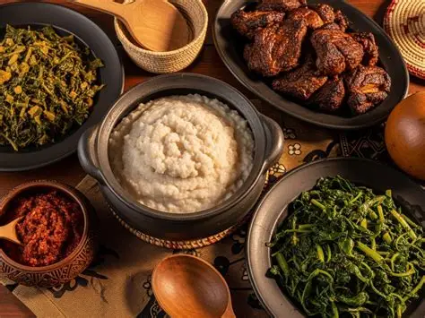

Nyla Foodies opened its doors in July 2026 on the corner of First Street and Jason Moyo Avenue, right in the heart of Harare's central business district. The idea was born out of a simple observation: it was easy to find a quick meal in the city, but harder to find a proper plate of sadza, a rich muriwo unedovi, or a well-prepared dish of mazondo cooked with real care.
We set out to change that — building a warm, welcoming space where office workers on their lunch break, families out for dinner, and tourists curious about Zimbabwean cuisine could all sit at the same table and eat the same honest food.

To serve authentic, home-style Zimbabwean meals that welcome both locals and tourists to the table, made with fresh, locally sourced ingredients.
To become Harare's most loved home for traditional Zimbabwean cuisine — a place proudly preserving our culinary heritage for future generations.
Authenticity, warmth, and community — cooked without shortcuts, served in a family-friendly atmosphere, and shared generously with everyone who walks in.
For our local guests, Nyla Foodies is a reminder of home — familiar dishes, generous portions, and prices that make it easy to come back often.
For visitors from abroad, our team is happy to explain each dish, suggest a good starting point, and share a little of the story behind Zimbabwean food culture.
Corner of First Street & Jason Moyo Avenue, Harare — in the heart of the CBD, close to the city's main shopping and business area.
Lunch and dinner, every day of the week.
Get Directions →